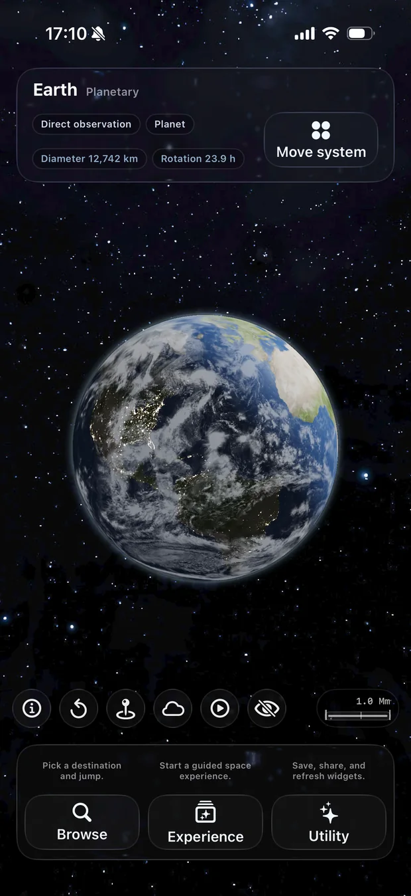
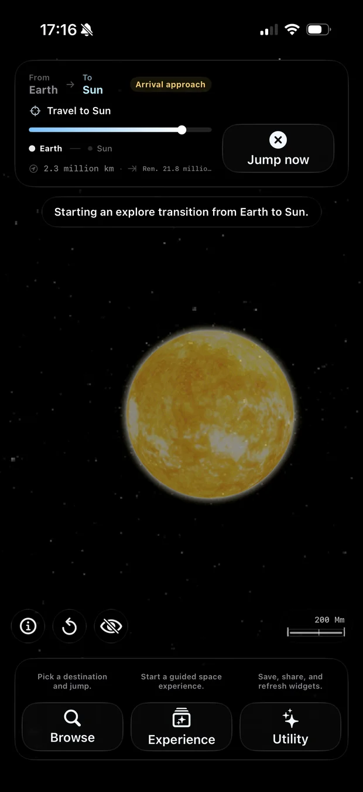
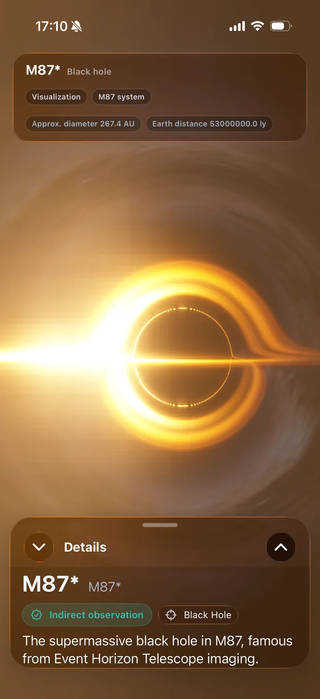
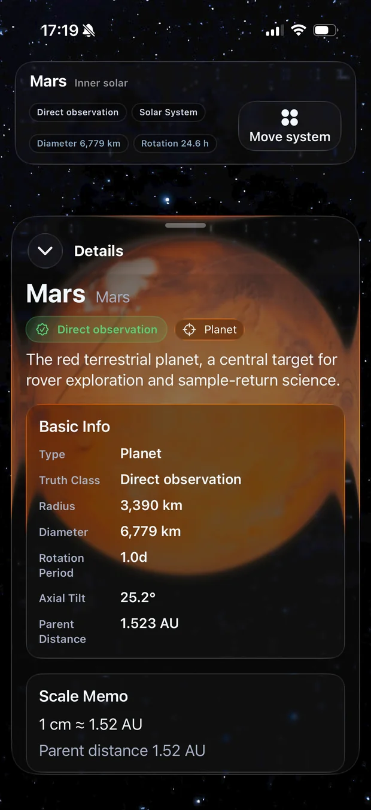
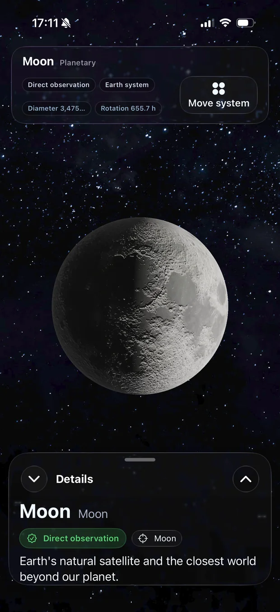
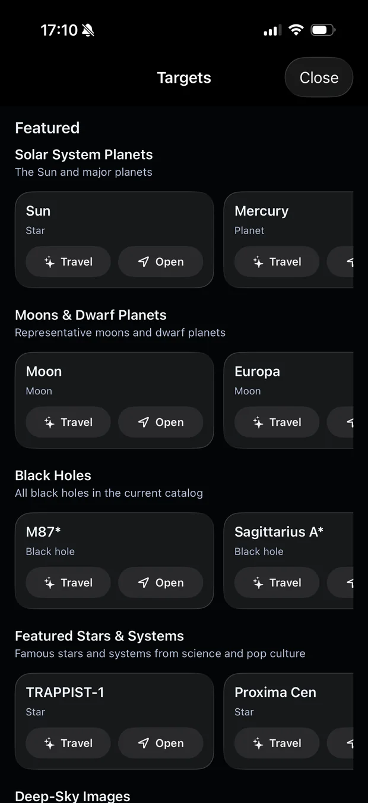
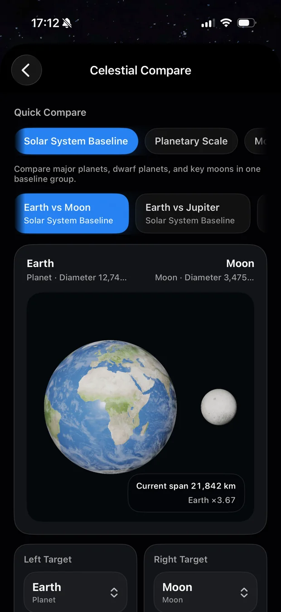
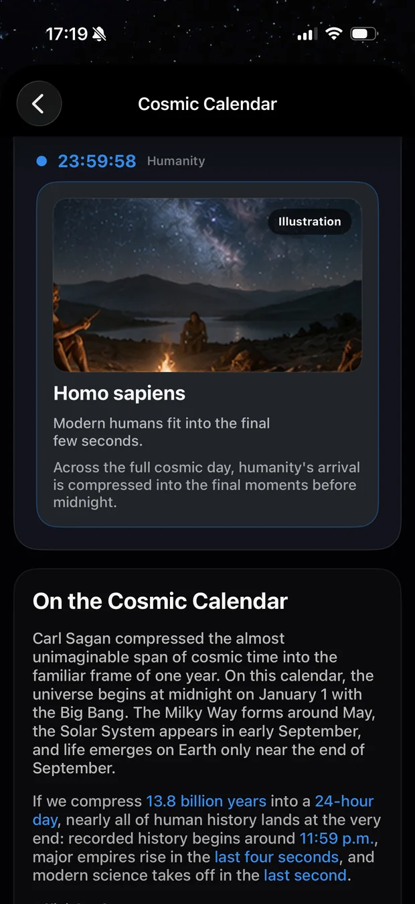
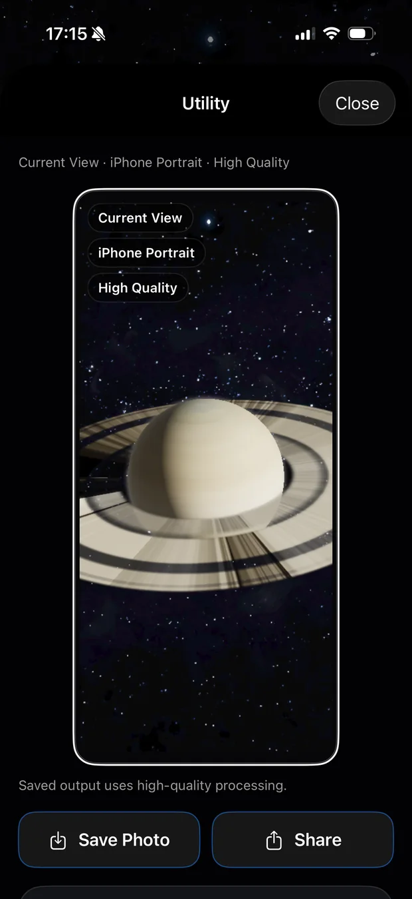
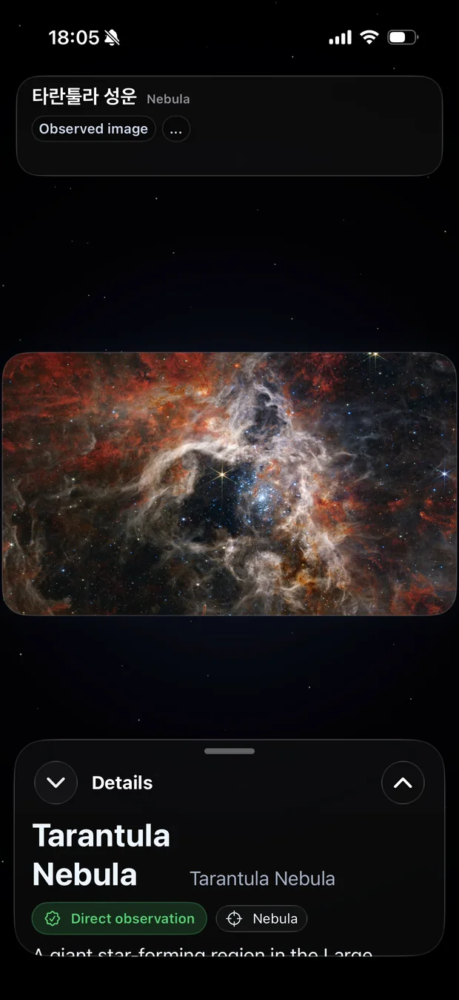

Dust to Cosmos:
Universe Scale
Explore connected worlds in honest scale.
Dust to Cosmos 2.0 connects planets, moons, star systems, black holes, and deep-sky objects in a smoother 3D journey with NASA-backed context and Truth Class labels.
Available now



Earth-Moon, Solar System, Jupiter, Saturn, and more in one 3D flow.
Select a body, follow it smoothly, then continue into its main view.
Richer rendering for the Sun, Saturn's rings, Earth, Moon, and exoplanets.
Start immediately. No login, subscription, or in-app purchase required.
Connected 3D systems
Move through worlds that belong together.
The app now treats systems as relationships, not isolated objects. Move through Earth and Moon, the Solar System, Jupiter's system, Saturn's system, and featured stellar systems with smooth spatial transitions.

Rendering and physics
Black holes, planets, moons, and shadows rendered for motion.
Metal-based 3D rendering brings gravitational lensing, planetary surfaces, lunar details, rings, and real-time shadow effects into an interactive space experience.

Explore and compare
Find objects fast, then compare scale directly.
Browse planets, moons, stars, black holes, and deep-sky objects with catalog filters. Compare celestial sizes and keep the context visible while you move between scenes.


Time, light, and daily cosmos
The universe becomes easier to feel when it has rhythm.

Cosmic Calendar
Compress cosmic history into a familiar scale of time.

Save and share
Turn the current view into a wallpaper or image to keep.

Deep-sky objects
Explore nebulae, galaxies, and observation-backed imagery.
Truth and privacy
Know what you are seeing.
Truth Class labels distinguish observed data, inferred models, and simulations. The app does not require an account and does not collect personal data.